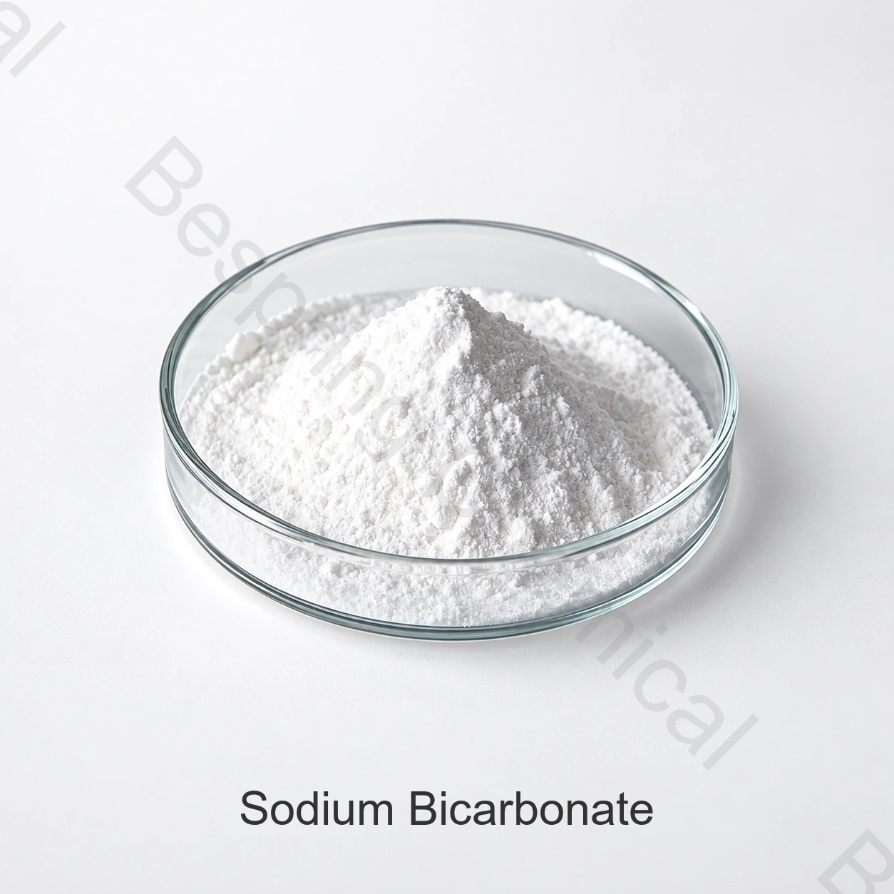

Acid neutralizing value
Use the supplier’s verified neutralizing value for each leavening acid to calculate the starting balance. American Society of Baking defines NV as pounds of base neutralized by 100 pounds of acid.
Baking soda · E500(ii) / INS 500(ii)
Source food-grade baking soda by assay, carbonate impurity, particle-size distribution and leavening performance. Balance the bicarbonate against the complete acid system to control gas release, finished-product pH, color and taste.
Share your baking acid system, particle-size target, application, destination and current specification.

Identity before application
Sodium bicarbonate—baking soda, bicarbonate of soda or sodium hydrogen carbonate—is the 84.01 g/mol sodium salt identified by JECFA as INS 500(ii). It is a mild alkaline powder used as a leavening agent and pH-control ingredient.
“Food grade” must be established for the exact source through its current specification, applicable food standard and lot COA. Feed, technical or cleaning grades are not interchangeable with this page.
Formulate the system, not the ingredient alone
Moisture brings bicarbonate and a food acid into solution; their reaction releases carbon dioxide. Gas must be released while the batter or dough can retain it. Heat can also decompose bicarbonate, but an under-acidified formula can leave excess alkalinity and an undesirable “soda” taste.
Use the supplier’s verified neutralizing value for each leavening acid to calculate the starting balance. American Society of Baking defines NV as pounds of base neutralized by 100 pounds of acid.
Acid type, temperature, moisture and mixing determine whether gas is released at the bench, during heating or in both stages. Measure bench loss and oven spring.
Finer particles generally dissolve and react sooner but can dust, cake or agglomerate. Specify sieve fractions or D10/D50/D90 and test dispersion in the actual dry blend.
Residual alkalinity can change browning, spread, crumb color and flavor. Acid excess can suppress browning or leave tart notes. Set a product-specific pH window.
Application-specific acceptance tests
Track specific gravity, batter hold, volume, cell uniformity, crumb color, pH and alkaline aftertaste.
Measure spread, surface pH, browning, blistering, snap and flavor. More bicarbonate is not automatically more lift.
Match particle distribution with the acid system; test dry-blend uniformity, segregation, moisture pickup and package-to-package gas release.
Validate dissolution, addition order, buffer demand, sodium contribution and sensory effect in the complete permitted food application.
Regulatory boundary: E/INS identity does not authorize every food category or use level. Confirm destination-market permission, label declaration and finished-food requirements.
Public standard ≠ Bespring supply promise
The values below summarize the cited 2006 JECFA identity and purity reference. They are not a Bespring product specification, offer or batch result. Obtain the current source-specific TDS and COA before approval.
| Field | JECFA reference | What the buyer should lock |
|---|---|---|
| Assay | ≥99.0% NaHCO3, dried basis | Method, reporting basis and batch result |
| Loss on drying | ≤0.25%; over silica gel, 4 h | Test method plus moisture/flow acceptance |
| pH | 8.0–8.6; 1-in-100 solution | Water, temperature and preparation method |
| Ammonium salts | Passes test | Method and explicit compliant result |
| Lead | ≤2 mg/kg | Destination limits, method and reporting limit |
| Particle size | No numerical limit in cited monograph | Sieve profile or D10/D50/D90 for the application |
| Process controls | Not a JECFA identity limit | Bulk density, flow, carbonate/chloride where required, blend behavior |
No verified Bespring sodium bicarbonate commercial specification was found in the reviewed page materials. Assay, packing, MOQ, origin, certifications and shelf life therefore remain request fields—not claims. Sales should issue the current source-specific document set.
Independent identity and specification reference for sodium hydrogen carbonate.
Review the JECFA recordCAS identity and technical-effect context, including leavening and pH control.
Review the FDA recordAvoid category confusion
Supplies bicarbonate and sodium. Calculate against the total acid system and verify finished pH.
A leavening acid, not baking soda. Select grade by neutralizing value and reaction rate.
A calcium-based leavening acid; phase, neutralizing value and timing determine its role.
Different cation and stronger alkalinity; it is not a one-for-one bicarbonate replacement.
For multi-acid systems, see Bespring’s bakery leavening phosphate solutions and food phosphate blends.
Bench-to-line approval
Confirm food-grade source, E/INS name, destination standard, label name and permitted use.
Compare assay, moisture, pH, impurities, particle distribution, bulk density and methods.
Use verified acid NV and account for all acidic ingredients; define the target batter or dough pH.
Compare gas timing, hold tolerance, volume, spread, structure, browning, taste and sodium.
Check dosing, dust, segregation, mixer distribution, scrap rate and finished-product consistency.
Approve COA fields, sampling, retain samples, liners, shelf life and change-notification terms.
Buyer questions
Yes. Baking soda, bicarbonate of soda and sodium hydrogen carbonate are common names for NaHCO3. Food use still requires a qualified food-grade source.
No. Baking soda is the bicarbonate base. Baking powder is a formulated system that normally contains bicarbonate, one or more leavening acids and a carrier.
There is no responsible universal answer. Calculate a starting point from each acid’s verified neutralizing value, then adjust through formula-specific pH, gas-release, sensory and line trials.
It influences dissolution, blend uniformity, dust, caking and reaction timing. Approve a full particle distribution and application performance, not “fine” or “coarse” wording alone.
State food application, acid system and NV, particle distribution, target pH, quantity, packing, destination, required standards, documentation and delivery terms.
Substantive review: 2026-08-22 · Sources: FAO/WHO JECFA, US FDA and American Society of Baking.
Application-led sourcing
Share the formula constraints that determine grade fit so the offer can be compared by evidence and performance.